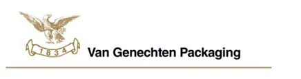

GIP-SITE Vincent Boden



Dit is het logo dat steeds terugkomt overal in het bedrijf en de fabriek van elk filiaal wereldwijd. Er is zelfs een vergaderzaal vernoemd naar het logo, namelijk de zaal ‘Eagle’. Ook staat er een standbeeld van een adelaar bij de inkom van het bedrijf. Zoals u ziet komt de adelaar overal in terug bij de huisstijl van het bedrijf. De keuze van de adelaar ligt ergens ver terug in de geschiedenis bij het ontstaan van Van Genechten Packaging. De juiste reden van deze keuze wisten ze mij niet mee te delen omdat het bedrijf al bestaat sinds 1834 en de mensen die er nu werken weten er zelf niet zo veel over.
Spijtig genoeg was het niet toegestaan om een kopie te krijgen van een verkoop factuur van Van Genechten Packaging of Nv Imas omdat dit wegens juridische voorwaarden niet toegestaan was. U hebt ongeveer wel een idee van hoe een standaard aankoopfactuur eruit ziet, zo ziet die van Van Genechten Packaging en Nv Imas er ook uit alleen dan met hun eigen bedrijfsinformatie uiteraard.
Van Genechten Group heeft na hun eigen logo dat ze overal gebruiken ook eigen software en hardware dat ze zelf hebben gecreëerd en enkel in hun eigen bedrijf gebruiken. Zo hebben ze hun eigen boekhoudprogramma, een eigen gemaakt tel systeem met een Smartbox om het aantal bedrukte vellen te tellen, … .
Als je naar al het bedrijf in het algemeen gaat kijken kun je wel zeggen dat ze een heel eigen gepersonaliseerde huisstijl hebben. Heel veel elementen zijn nergens anders terug te vinden wat zorgt voor originaliteit en eigenheid wat dit bedrijf dus scheidt van andere bedrijven.